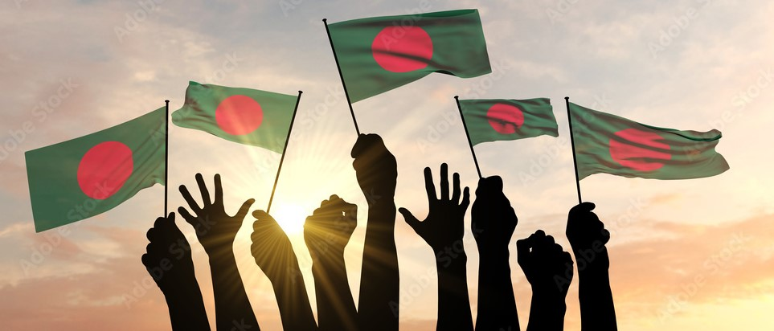
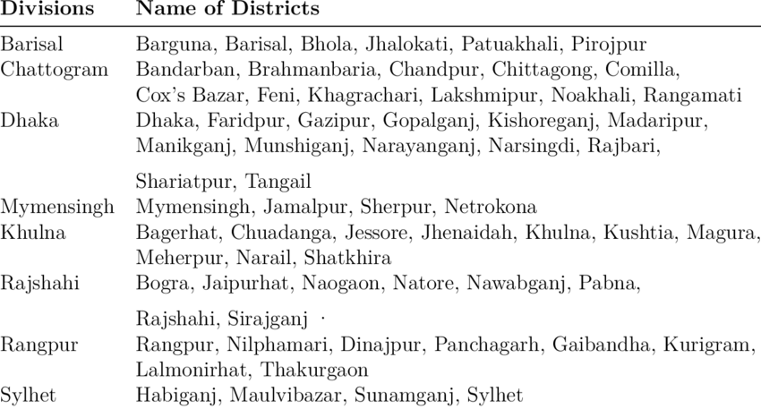

Bangladesh is administratively divided into 8 divisions: Dhaka, Chattogram, Khulna, Rajshahi, Barishal, Sylhet, Mymensingh, and Rangpur. Each division is further subdivided into districts, with a total of 64 districts across the country. These districts are then divided into upazilas (sub-districts) and unions, which handle local administration and services. This structure helps manage the country's diverse regions and ensure effective governance.
 Bangladesh, located in South Asia, is a vibrant and culturally rich country bordered by India, Myanmar, and the Bay of Bengal. With a population exceeding 170 million people, it is one of the most densely populated nations in the world. The capital city, Dhaka, serves as the economic and cultural hub. Gaining independence from Pakistan in 1971, Bangladesh has since made notable strides in economic development, particularly in the textile industry. The country is known for its rich cultural heritage, including its literary traditions, festivals like Pohela Boishakh, and its diverse cuisine. Despite facing challenges such as climate change and poverty, Bangladesh continues to show resilience and growth, making significant contributions to global trade and culture.
Main sources of income Agriculture 60.36%, non-agricultural labourer 3.38%, industry 3.99%, commerce 13.71%, transport and communication 3.52%, service 6.15%, construction 1.98%, religious service 0.16%, rent and remittance 0.43% and others 6.32%.
Health centres Hospital 20, TB hospital 9, infectious diseases hospital 11, diabetic hospital 10, heart foundation 1, maternity and child welfare centre 27, police hospital 7, railway hospital 5, eye hospital 7, mission hospital 4, satellite clinic 251, mental hospital 1, nursing institute 37, upazila health complex 120, health and family welfare centre 690, clinic 100. [Sajahan Miah]
References Bangladesh Population Census 2001, Bangladesh Bureau of Statistics; Cultural survey report of zilas and upazilas of Rajshahi Division 2007.